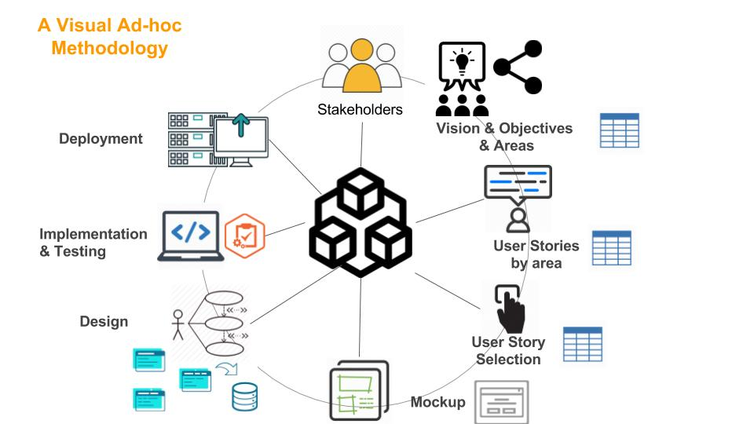
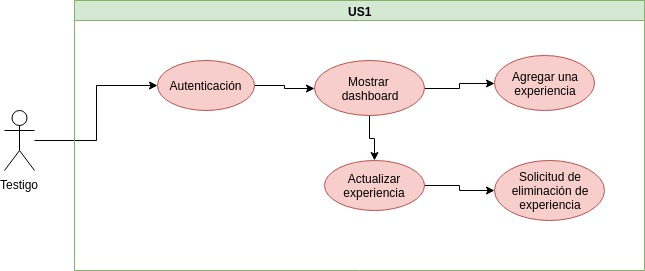
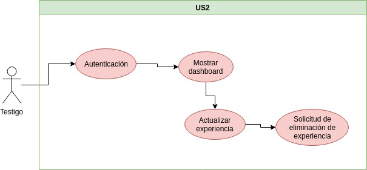
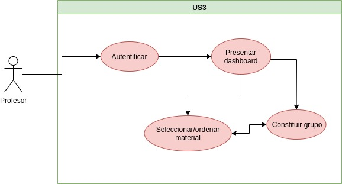
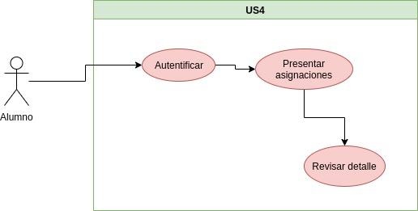
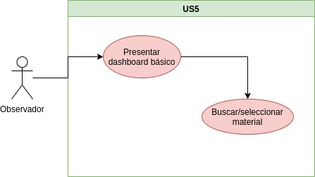
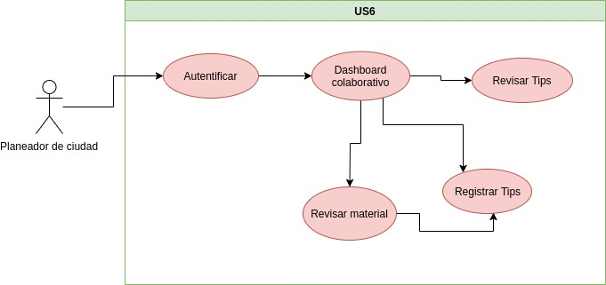
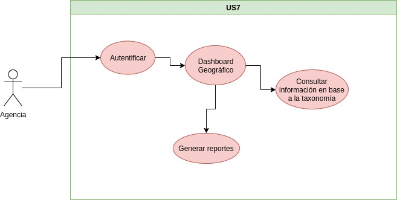
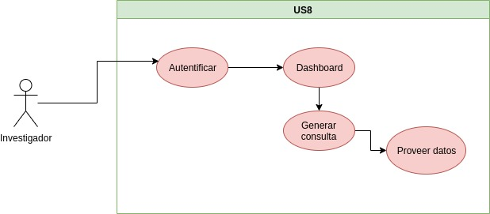
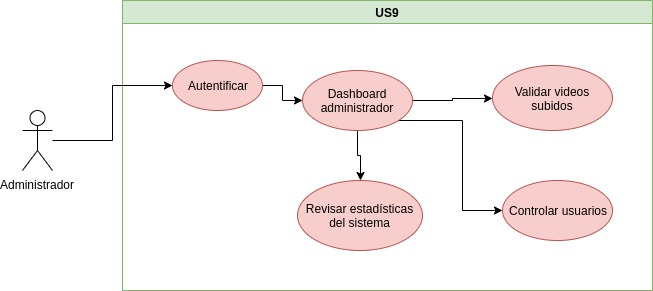

Metodología AD-HOC¶
{kind=link}
Identifación de los Stakeholders¶
Se aprecian los siguientes Stakeholders:
Stakeholders¶
N° |
Nombre |
Tipo |
Observaciones |
01 |
Alumnos |
Usuarios |
Quieren conocer acerca de desastres naturales |
02 |
Profesores |
Usuarios |
Quieren conocer acerca de desastres naturales |
03 |
Planeadores de Ciudad |
Usuarios |
Tips acerca de aspectos de desastres naturales |
04 |
Org. rel D.N |
Usuario |
ej: ONEMI |
05 |
Investigador |
Usuario |
Open Data |
06 |
Testigo |
Usuario |
|
07 |
Observador |
Usuario |
Vision¶
Sistema de enseñanza para el area de Desastres Naturales.
Sistema de apoyo a la toma de deciciones.
Sistema de referencia de guias para mejorar la adaptación de buenas prácticas en materia de Desastres Naturales de una ciudad.
Sistemas de datos abiertos (open data).
Objetivos¶
Preveer material acerca de Desastres Naturales con fines de enseñanza tanto para profesores y alumnos.
Preveer ejemplos de buenas practicas acerca de Desastres Naturales para mejorar la planeación de ciudades.
Proveer información gráfica que permita apoyar el proceso de toma de desiciones relacionadas con la «preaparación para Desastres Naturales».
Áreas¶
Ingreso o Captura de Información.
Administración
Datos Abiertos
Enseñanza
Buenas Prácticas
Visualización de Resultados
Historias de Usuario¶
Usuario |
Captura de Información |
Enseñanza |
Buenas Prácticas |
Visualización de Resultados |
Administración |
Open Data |
Alumnos |
✓ |
✓ |
||||
Profesores |
✓ |
✓ |
✓ |
|||
Planeadores de Ciudades |
✓ |
✓ |
✓ |
|||
Agencia u Organización |
✓ |
✓ |
||||
Investigadores |
✓ |
✓ |
||||
Testigos |
✓ |
✓ |
✓ |
|||
Observador |
Especificación de Historias de Usuario¶
Id_Usuario |
Yo como |
Quiero |
… de modo que… |
US1 |
Testigo |
Documentar mi experiencia en un desastre natural. |
Otros puedan aprender de esta experiencia para mejorar su preparaciones futuras en D.N |
US2 |
Testigo |
Revisar y recordar mi testimonio. |
Para mejorar o modificar o precisar aspectos de la experiencia. |
US3 |
Profesor |
Constituir Grupos de interes (estudiantes) y seleccionar material para ellos. |
Para enseñar acerca de desastres naturales. |
US4 |
Alumno |
Revisar mis asignaciones. |
Para cumplir con las actividades asignadas por el profesor. |
US5 |
Observador |
Revisar material audiovisual (testimonios). |
Para conocer ya aprender sobre desastres naturales. |
US6 |
Planeadores de ciudades |
Revisar material, revisar tips y registrar tips. |
Para aprender y utilizar los tips como referencia. |
US7 |
Agencia u Organización |
Revisar información agrupada y localizada (mapa). |
Apoyar toma de desiciones para futuros desastres naturales. |
US8 |
Investigadores |
Obtener datos. |
Para incluir en una investigación. |
US9 |
Administrador |
Revisar, autorizar resolver situaciones/ problemas relacionadas con la información del sistema. |
Apoyar toma de desiciones para futuros desastres naturales. |
Diagrama Historia de Usuario != Caso de Uso
        